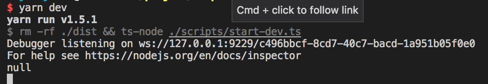
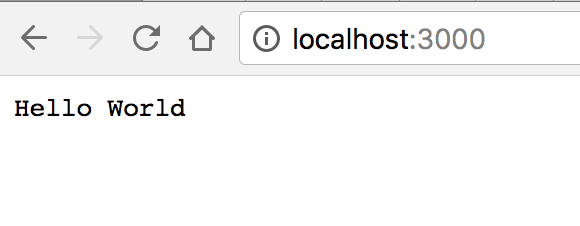
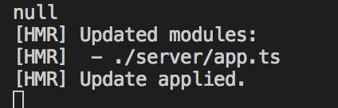
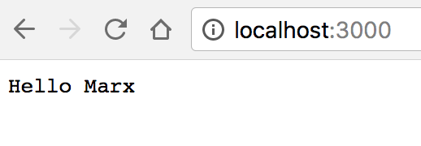

<!DOCTYPE html>
<html>
<head><meta name="generator" content="Hexo 3.9.0">
  <meta charset="utf-8">
  <link rel="manifest" href="manifest.json">
  
  <title>使用webpack搭建基于typescript的node开发环境 | Hello, I am Marx</title>
  <meta name="baidu-site-verification" content="fwLK28VV6P">
  <meta name="viewport" content="width=device-width, initial-scale=1, maximum-scale=1">
  <meta name="description" content="正在学习node.js，这里介绍使用webpack来搭建基于typescript的node开发环境。">
<meta name="keywords" content="webpack,node,typescript">
<meta property="og:type" content="article">
<meta property="og:title" content="使用webpack搭建基于typescript的node开发环境">
<meta property="og:url" content="https://marxjiao.com/2018/04/10/node-webpack/index.html">
<meta property="og:site_name" content="Hello, I am Marx">
<meta property="og:description" content="正在学习node.js，这里介绍使用webpack来搭建基于typescript的node开发环境。">
<meta property="og:locale" content="zh-CN">
<meta property="og:image" content="https://marxjiao.com/2018/04/10/node-webpack/start-output.png">
<meta property="og:image" content="https://marxjiao.com/2018/04/10/node-webpack/started-view.png">
<meta property="og:image" content="https://marxjiao.com/2018/04/10/node-webpack/updated-output.png">
<meta property="og:image" content="https://marxjiao.com/2018/04/10/node-webpack/updated-view.png">
<meta property="og:updated_time" content="2020-08-04T09:34:02.379Z">
<meta name="twitter:card" content="summary">
<meta name="twitter:title" content="使用webpack搭建基于typescript的node开发环境">
<meta name="twitter:description" content="正在学习node.js，这里介绍使用webpack来搭建基于typescript的node开发环境。">
<meta name="twitter:image" content="https://marxjiao.com/2018/04/10/node-webpack/start-output.png">
  
  
    <link rel="icon" href="/favicon.png">
  
  
    <link href="//fonts.googleapis.com/css?family=Source+Code+Pro" rel="stylesheet" type="text/css">
  
  <link rel="stylesheet" href="/css/style.css">
  

  <script>
  var _hmt = _hmt || [];
  (function() {
    var hm = document.createElement("script");
    hm.src = "https://hm.baidu.com/hm.js?f2aece70f9b4d1eb644623e3ddf0dfe1";
    var s = document.getElementsByTagName("script")[0]; 
    s.parentNode.insertBefore(hm, s);
  })();
  </script>
  </head></html>
<body>
  <div id="container">
    <div id="wrap">
      <header id="header">
  <div id="banner"></div>
  <div id="header-outer" class="outer">
    <div id="header-title" class="inner">
      <h1 id="logo-wrap">
        <a href="/" id="logo">Hello, I am Marx</a>
      </h1>
      
        <h2 id="subtitle-wrap">
          <a href="/" id="subtitle">Technology is to the left, art is to the right. But unfortunately I can not divide them.</a>
        </h2>
      
    </div>
    <div id="header-inner" class="inner">
      <nav id="main-nav">
        <a id="main-nav-toggle" class="nav-icon"></a>
        
          <a class="main-nav-link" href="/">Home</a>
        
          <a class="main-nav-link" href="/archives">Archives</a>
        
          <a class="main-nav-link" href="/projects">Projects</a>
        
      </nav>
      <nav id="sub-nav">
        
        
      </nav>
      
    </div>
  </div>
</header>
      <div class="outer">
        <section id="main"><article id="post-node-webpack" class="article article-type-post" itemscope itemprop="blogPost">
  <div class="article-meta">
    <a href="/2018/04/10/node-webpack/" class="article-date">
  <time datetime="2018-04-10T02:51:21.000Z" itemprop="datePublished">2018-04-10</time>
</a>
    
  </div>
  <div class="article-inner">
    
    
      <header class="article-header">
        
  
    <h1 class="article-title" itemprop="name">
      使用webpack搭建基于typescript的node开发环境
    </h1>
  

      </header>
    
    <div class="article-entry" itemprop="articleBody">
      
        <p>正在学习node.js，这里介绍使用webpack来搭建基于typescript的node开发环境。</p>
<a id="more"></a>

<h2 id="整个环境的必备功能"><a href="#整个环境的必备功能" class="headerlink" title="整个环境的必备功能"></a>整个环境的必备功能</h2><p>一套好的开发环境能让开发者专注于代码，而不必关系其它事情。这里先列出一些必要的条件。</p>
<ol>
<li>一个命令就能启动项目。</li>
<li>一个命令能打包项目。</li>
<li>开发时代码改动能够自动更新，最好是热更新，而不是重启服务，这里为后面和前端代码一起调试做准备。</li>
<li>开发中能使用编辑器或者chrome调试，我本人习惯使用vscode。</li>
</ol>
<h2 id="基本搭建思路"><a href="#基本搭建思路" class="headerlink" title="基本搭建思路"></a>基本搭建思路</h2><p>全局使用ts，包括脚本，webpack配置文件。使用npm调用ts脚本，脚本使用ts-node执行，使用ts脚本调用webpack的api来打包编译文件。</p>
<blockquote>
<p>npm scipts -&gt; start-dev.ts -&gt; webpack(webpackConfig)</p>
</blockquote>
<p>这里解释下为什么使用ts脚本来调用webpack而不是直接将webpack命令写在npm scripts里。我的想法是<code>All In Typescrpt</code>，尽量做到能用ts的就不用js，使用webpack的node api能轻松实现用ts写webpack配置。这样把做还有一个好处就是可以把webpack的配置写成动态的，根据传入参数来生成需要的配置。</p>
<h2 id="选型"><a href="#选型" class="headerlink" title="选型"></a>选型</h2><p>到这里项目的选型已经很明了了。</p>
<ul>
<li><code>Typescript</code> 项目使用的主语言，为前端开发添加强类型支持，能在编码过程中避免很多问题。</li>
<li><code>Koa</code> 应用比较广泛。没有附加多余的功能，中间件即插即用。</li>
<li><code>Webpack</code> 打包工具，开发中热加载。</li>
<li><code>ts-node</code> 用来直接执行ts脚本。</li>
<li><code>start-server-webpack-plugin</code> 很关键的webpack插件，能够在编译后直接启动服务，并且支持signal模式的热加载，配合<code>webpack/hot/signal</code>很好用。</li>
</ul>
<h2 id="环境搭建"><a href="#环境搭建" class="headerlink" title="环境搭建"></a>环境搭建</h2><p>我们先用Koa写一个简单的web server，之后针对这个server来搭建环境。</p>
<h3 id="项目代码"><a href="#项目代码" class="headerlink" title="项目代码"></a>项目代码</h3><p>新建<code>server/app.ts</code>，这个文件主要用来创建一个koa app。</p>
<figure class="highlight typescript"><table><tr><td class="gutter"><pre><span class="line">1</span><br><span class="line">2</span><br><span class="line">3</span><br><span class="line">4</span><br><span class="line">5</span><br><span class="line">6</span><br><span class="line">7</span><br><span class="line">8</span><br><span class="line">9</span><br></pre></td><td class="code"><pre><span class="line"><span class="keyword">import</span> * <span class="keyword">as</span> Koa <span class="keyword">from</span> <span class="string">'koa'</span>;</span><br><span class="line"></span><br><span class="line"><span class="keyword">const</span> app = <span class="keyword">new</span> Koa();</span><br><span class="line"></span><br><span class="line">app.use(<span class="function"><span class="params">ctx</span> =&gt;</span> &#123;</span><br><span class="line">    ctx.body = <span class="string">'Hello World'</span>;</span><br><span class="line">&#125;);</span><br><span class="line"></span><br><span class="line"><span class="keyword">export</span> <span class="keyword">default</span> app;</span><br></pre></td></tr></table></figure>

<p>我们需要另一个文件来启动server，并且监听<code>server/app.ts</code>的改变，来热加载项目。</p>
<p>新建<code>server/server.ts</code></p>
<figure class="highlight typescript"><table><tr><td class="gutter"><pre><span class="line">1</span><br><span class="line">2</span><br><span class="line">3</span><br><span class="line">4</span><br><span class="line">5</span><br><span class="line">6</span><br><span class="line">7</span><br><span class="line">8</span><br><span class="line">9</span><br><span class="line">10</span><br><span class="line">11</span><br><span class="line">12</span><br><span class="line">13</span><br><span class="line">14</span><br><span class="line">15</span><br><span class="line">16</span><br><span class="line">17</span><br><span class="line">18</span><br><span class="line">19</span><br></pre></td><td class="code"><pre><span class="line"><span class="keyword">import</span> * <span class="keyword">as</span> http <span class="keyword">from</span> <span class="string">'http'</span>;</span><br><span class="line"><span class="keyword">import</span> app <span class="keyword">from</span> <span class="string">'./app'</span>;</span><br><span class="line"></span><br><span class="line"><span class="comment">// app.callback() 会返回一个能够通过http.createServer创建server的函数，类似express和connect。</span></span><br><span class="line"><span class="keyword">let</span> currentApp = app.callback();</span><br><span class="line"><span class="comment">// 创建server</span></span><br><span class="line"><span class="keyword">const</span> server = http.createServer(currentApp);</span><br><span class="line">server.listen(<span class="number">3000</span>);</span><br><span class="line"></span><br><span class="line"><span class="comment">// 热加载</span></span><br><span class="line"><span class="keyword">if</span> (<span class="built_in">module</span>.hot) &#123;</span><br><span class="line">    <span class="comment">// 监听./app.ts</span></span><br><span class="line">    <span class="built_in">module</span>.hot.accept(<span class="string">'./app.ts'</span>, <span class="function"><span class="params">()</span> =&gt;</span> &#123;</span><br><span class="line">        <span class="comment">// 如果有改动，就使用新的app来处理请求</span></span><br><span class="line">        server.removeListener(<span class="string">'request'</span>, currentApp);</span><br><span class="line">        currentApp = app.callback();</span><br><span class="line">        server.on(<span class="string">'request'</span>, currentApp);</span><br><span class="line">    &#125;);</span><br><span class="line">&#125;</span><br></pre></td></tr></table></figure>

<p></p>
<h3 id="编译配置"><a href="#编译配置" class="headerlink" title="编译配置"></a>编译配置</h3><p>在写webpack配置之前，我们先写下ts配置。</p>
<h4 id="typescript配置"><a href="#typescript配置" class="headerlink" title="typescript配置"></a>typescript配置</h4><p>这里写的是webpack编译代码用的配置，后面还会介绍ts-node跑脚本时使用的配置。我们新建<code>config/tsconfig.json</code>：</p>
<figure class="highlight json"><table><tr><td class="gutter"><pre><span class="line">1</span><br><span class="line">2</span><br><span class="line">3</span><br><span class="line">4</span><br><span class="line">5</span><br><span class="line">6</span><br><span class="line">7</span><br><span class="line">8</span><br><span class="line">9</span><br><span class="line">10</span><br><span class="line">11</span><br><span class="line">12</span><br><span class="line">13</span><br><span class="line">14</span><br><span class="line">15</span><br><span class="line">16</span><br><span class="line">17</span><br><span class="line">18</span><br><span class="line">19</span><br><span class="line">20</span><br></pre></td><td class="code"><pre><span class="line">&#123;</span><br><span class="line">    <span class="attr">"compilerOptions"</span>: &#123;</span><br><span class="line">        <span class="comment">// module配置很重要，千万不能配置成commonjs，热加载会失效</span></span><br><span class="line">        <span class="attr">"module"</span>: <span class="string">"es2015"</span>,</span><br><span class="line">        <span class="attr">"noImplicitAny"</span>: <span class="literal">true</span>,</span><br><span class="line">        <span class="attr">"sourceMap"</span>: <span class="literal">true</span>,</span><br><span class="line">        <span class="attr">"moduleResolution"</span>: <span class="string">"node"</span>,</span><br><span class="line">        <span class="attr">"isolatedModules"</span>: <span class="literal">true</span>,</span><br><span class="line">        <span class="attr">"target"</span>: <span class="string">"es5"</span>,</span><br><span class="line">        <span class="attr">"strictNullChecks"</span>: <span class="literal">true</span>,</span><br><span class="line">        <span class="attr">"noUnusedLocals"</span>: <span class="literal">true</span>,</span><br><span class="line">        <span class="attr">"noUnusedParameters"</span>: <span class="literal">true</span>,</span><br><span class="line">        <span class="attr">"inlineSources"</span>: <span class="literal">false</span>,</span><br><span class="line">        <span class="attr">"lib"</span>: [<span class="string">"es2015"</span>]</span><br><span class="line">    &#125;,</span><br><span class="line">    <span class="attr">"exclude"</span>: [</span><br><span class="line">        <span class="string">"node_modules"</span>,</span><br><span class="line">        <span class="string">"**/*.spec.ts"</span></span><br><span class="line">    ]</span><br><span class="line">&#125;</span><br></pre></td></tr></table></figure>

<h4 id="webpack配置"><a href="#webpack配置" class="headerlink" title="webpack配置"></a>webpack配置</h4><p>一般情况下需要准备2套webpack配置，一套用来开发，一套用来发布。前面已经说过了使用webpack的api来打包为动态创建webpack配置提供了可能。所以这里我们写一个<code>WebpackConfig</code>类，创建实例时根据参数，生成不同环境的配置。</p>
<h5 id="开发环境和发布环境的区别"><a href="#开发环境和发布环境的区别" class="headerlink" title="开发环境和发布环境的区别"></a>开发环境和发布环境的区别</h5><p>首先两个环境的mode是是不同的，开发环境是<code>development</code>，发布环境是<code>production</code>。关于mode的更多信息可查看<a href="https://webpack.js.org/concepts/mode/" target="_blank" rel="noopener">webpack文档</a>。</p>
<p>开发环境需要热加载和启动服务，entry里需要配置’webpack/hot/signal’，使用<code>webpack-node-externals</code>将’webpack/hot/signal’打包到代码里，添加HotModuleReplacementPlugin，使用<code>start-server-webpack-plugin</code>启动服务和开启热加载。</p>
<h5 id="webpack配置内容"><a href="#webpack配置内容" class="headerlink" title="webpack配置内容"></a>webpack配置内容</h5><p>现在我们来写下webpack配置。重点写在注释中了。</p>
<p>新建文件<code>config/Webpack.config.ts</code>。</p>
<figure class="highlight typescript"><table><tr><td class="gutter"><pre><span class="line">1</span><br><span class="line">2</span><br><span class="line">3</span><br><span class="line">4</span><br><span class="line">5</span><br><span class="line">6</span><br><span class="line">7</span><br><span class="line">8</span><br><span class="line">9</span><br><span class="line">10</span><br><span class="line">11</span><br><span class="line">12</span><br><span class="line">13</span><br><span class="line">14</span><br><span class="line">15</span><br><span class="line">16</span><br><span class="line">17</span><br><span class="line">18</span><br><span class="line">19</span><br><span class="line">20</span><br><span class="line">21</span><br><span class="line">22</span><br><span class="line">23</span><br><span class="line">24</span><br><span class="line">25</span><br><span class="line">26</span><br><span class="line">27</span><br><span class="line">28</span><br><span class="line">29</span><br><span class="line">30</span><br><span class="line">31</span><br><span class="line">32</span><br><span class="line">33</span><br><span class="line">34</span><br><span class="line">35</span><br><span class="line">36</span><br><span class="line">37</span><br><span class="line">38</span><br><span class="line">39</span><br><span class="line">40</span><br><span class="line">41</span><br><span class="line">42</span><br><span class="line">43</span><br><span class="line">44</span><br><span class="line">45</span><br><span class="line">46</span><br><span class="line">47</span><br><span class="line">48</span><br><span class="line">49</span><br><span class="line">50</span><br><span class="line">51</span><br><span class="line">52</span><br><span class="line">53</span><br><span class="line">54</span><br><span class="line">55</span><br><span class="line">56</span><br><span class="line">57</span><br><span class="line">58</span><br><span class="line">59</span><br><span class="line">60</span><br><span class="line">61</span><br><span class="line">62</span><br><span class="line">63</span><br><span class="line">64</span><br><span class="line">65</span><br><span class="line">66</span><br><span class="line">67</span><br><span class="line">68</span><br><span class="line">69</span><br><span class="line">70</span><br><span class="line">71</span><br><span class="line">72</span><br><span class="line">73</span><br><span class="line">74</span><br><span class="line">75</span><br></pre></td><td class="code"><pre><span class="line"><span class="keyword">import</span> * <span class="keyword">as</span> path <span class="keyword">from</span> <span class="string">'path'</span>;</span><br><span class="line"><span class="keyword">import</span> * <span class="keyword">as</span> StartServerPlugin <span class="keyword">from</span> <span class="string">"start-server-webpack-plugin"</span>;</span><br><span class="line"><span class="keyword">import</span> * <span class="keyword">as</span> webpack <span class="keyword">from</span> <span class="string">'webpack'</span>;</span><br><span class="line"><span class="keyword">import</span> * <span class="keyword">as</span> nodeExternals <span class="keyword">from</span> <span class="string">'webpack-node-externals'</span>;</span><br><span class="line"><span class="keyword">import</span> &#123;Configuration, ExternalsElement&#125; <span class="keyword">from</span> <span class="string">'webpack'</span>;</span><br><span class="line"></span><br><span class="line"><span class="keyword">class</span> WebpackConfig <span class="keyword">implements</span> Configuration &#123;</span><br><span class="line">    <span class="comment">// node环境</span></span><br><span class="line">    target: Configuration[<span class="string">'target'</span>] = <span class="string">"node"</span>;</span><br><span class="line">    <span class="comment">// 默认为发布环境</span></span><br><span class="line">    mode: Configuration[<span class="string">'mode'</span>] = <span class="string">'production'</span>;</span><br><span class="line">    <span class="comment">// 入口文件</span></span><br><span class="line">    entry = [path.resolve(__dirname, <span class="string">'../server/server.ts'</span>)];</span><br><span class="line">    output = &#123;</span><br><span class="line">        path: path.resolve(__dirname, <span class="string">'../dist'</span>),</span><br><span class="line">        filename: <span class="string">"server.js"</span></span><br><span class="line">    &#125;;</span><br><span class="line">    <span class="comment">// 这里为开发环境留空</span></span><br><span class="line">    externals: ExternalsElement[] = [];</span><br><span class="line">    <span class="comment">// loader们</span></span><br><span class="line">    <span class="keyword">module</span> = &#123;</span><br><span class="line">        rules: [</span><br><span class="line">            &#123;</span><br><span class="line">                test: <span class="regexp">/\.tsx?$/</span>,</span><br><span class="line">                use: [</span><br><span class="line">                    &#123;</span><br><span class="line">                        loader: <span class="string">'ts-loader'</span>,</span><br><span class="line">                        options: &#123;</span><br><span class="line">                            <span class="comment">// 加快编译速度</span></span><br><span class="line">                            transpileOnly: <span class="literal">true</span>,</span><br><span class="line">                            <span class="comment">// 指定特定的ts编译配置，为了区分脚本的ts配置</span></span><br><span class="line">                            configFile: path.resolve(__dirname, <span class="string">'./tsconfig.json'</span>)</span><br><span class="line">                        &#125;</span><br><span class="line">                    &#125;</span><br><span class="line">                ],</span><br><span class="line">                exclude: <span class="regexp">/node_modules/</span></span><br><span class="line">            &#125;</span><br><span class="line">        ]</span><br><span class="line">    &#125;;</span><br><span class="line">    resolve = &#123;</span><br><span class="line">        extensions: [<span class="string">".ts"</span>, <span class="string">".js"</span>, <span class="string">".json"</span>],</span><br><span class="line">    &#125;;</span><br><span class="line">    <span class="comment">// 开发环境也使用NoEmitOnErrorsPlugin</span></span><br><span class="line">    plugins = [<span class="keyword">new</span> webpack.NoEmitOnErrorsPlugin()];</span><br><span class="line">    <span class="keyword">constructor</span>(<span class="params">mode: Configuration['mode']</span>) &#123;</span><br><span class="line">        <span class="comment">// 配置mode，production情况下用上边的默认配置就ok了。</span></span><br><span class="line">        <span class="keyword">this</span>.mode = mode;</span><br><span class="line">        <span class="keyword">if</span> (mode === <span class="string">'development'</span>) &#123;</span><br><span class="line">            <span class="comment">// 添加webpack/hot/signal,用来热更新</span></span><br><span class="line">            <span class="keyword">this</span>.entry.push(<span class="string">'webpack/hot/signal'</span>);</span><br><span class="line">            <span class="keyword">this</span>.externals.push(</span><br><span class="line">                <span class="comment">// 添加webpack/hot/signal,用来热更新</span></span><br><span class="line">                nodeExternals(&#123;</span><br><span class="line">                    whitelist: [<span class="string">'webpack/hot/signal'</span>]</span><br><span class="line">                &#125;)</span><br><span class="line">            );</span><br><span class="line">            <span class="keyword">const</span> devPlugins = [</span><br><span class="line">                <span class="comment">// 用来热更新</span></span><br><span class="line">                <span class="keyword">new</span> webpack.HotModuleReplacementPlugin(),</span><br><span class="line">                <span class="comment">// 启动服务</span></span><br><span class="line">                <span class="keyword">new</span> StartServerPlugin(&#123;</span><br><span class="line">                    <span class="comment">// 启动的文件</span></span><br><span class="line">                    name: <span class="string">'server.js'</span>,</span><br><span class="line">                    <span class="comment">// 开启signal模式的热加载</span></span><br><span class="line">                    signal: <span class="literal">true</span>,</span><br><span class="line">                    <span class="comment">// 为调试留接口</span></span><br><span class="line">                    nodeArgs: [<span class="string">'--inspect'</span>]</span><br><span class="line">                &#125;),</span><br><span class="line">            ]</span><br><span class="line">            <span class="keyword">this</span>.plugins.push(...devPlugins);</span><br><span class="line">        &#125;</span><br><span class="line">    &#125;</span><br><span class="line">&#125;</span><br><span class="line"></span><br><span class="line"><span class="keyword">export</span> <span class="keyword">default</span> WebpackConfig;</span><br></pre></td></tr></table></figure>

<blockquote>
<p>这里需要注意，Windows 系统不支持 <code>webpack/hot/signal</code>。需要使用 <code>webpack/hot/poll</code>。</p>
<p>具体配置区别参见 <a href="https://github.com/MarxJiao/webpack-node/commit/0cda390823172088db4c4d194f2445bd0d23243a" target="_blank" rel="noopener">commit</a></p>
<p>Windows 下的配置： <a href="https://github.com/MarxJiao/webpack-node/blob/poll/config/Webpack.config.ts" target="_blank" rel="noopener">webpack.config.ts</a> </p>
</blockquote>
<h3 id="编译脚本"><a href="#编译脚本" class="headerlink" title="编译脚本"></a>编译脚本</h3><p>使用ts-node来启动脚本时需要使用新<code>tsconfig.json</code>，这个编译目标是在node中运行。</p>
<p>在项目根目录新建<code>tsconfig.json</code>:</p>
<figure class="highlight json"><table><tr><td class="gutter"><pre><span class="line">1</span><br><span class="line">2</span><br><span class="line">3</span><br><span class="line">4</span><br><span class="line">5</span><br><span class="line">6</span><br><span class="line">7</span><br><span class="line">8</span><br><span class="line">9</span><br><span class="line">10</span><br><span class="line">11</span><br><span class="line">12</span><br><span class="line">13</span><br><span class="line">14</span><br><span class="line">15</span><br><span class="line">16</span><br><span class="line">17</span><br><span class="line">18</span><br><span class="line">19</span><br><span class="line">20</span><br></pre></td><td class="code"><pre><span class="line">&#123;</span><br><span class="line">    <span class="attr">"compilerOptions"</span>: &#123;</span><br><span class="line">        <span class="comment">// 为了node环境能直接运行</span></span><br><span class="line">        <span class="attr">"module"</span>: <span class="string">"commonjs"</span>,</span><br><span class="line">        <span class="attr">"noImplicitAny"</span>: <span class="literal">true</span>,</span><br><span class="line">        <span class="attr">"sourceMap"</span>: <span class="literal">true</span>,</span><br><span class="line">        <span class="attr">"moduleResolution"</span>: <span class="string">"node"</span>,</span><br><span class="line">        <span class="attr">"isolatedModules"</span>: <span class="literal">true</span>,</span><br><span class="line">        <span class="attr">"target"</span>: <span class="string">"es5"</span>,</span><br><span class="line">        <span class="attr">"strictNullChecks"</span>: <span class="literal">true</span>,</span><br><span class="line">        <span class="attr">"noUnusedLocals"</span>: <span class="literal">true</span>,</span><br><span class="line">        <span class="attr">"noUnusedParameters"</span>: <span class="literal">true</span>,</span><br><span class="line">        <span class="attr">"inlineSources"</span>: <span class="literal">false</span>,</span><br><span class="line">        <span class="attr">"lib"</span>: [<span class="string">"es2015"</span>]</span><br><span class="line">    &#125;,</span><br><span class="line">    <span class="attr">"exclude"</span>: [</span><br><span class="line">        <span class="string">"node_modules"</span>,</span><br><span class="line">        <span class="string">"**/*.spec.ts"</span></span><br><span class="line">    ]</span><br><span class="line">&#125;</span><br></pre></td></tr></table></figure>

<h4 id="开发脚本"><a href="#开发脚本" class="headerlink" title="开发脚本"></a>开发脚本</h4><p>启动开发脚本，<code>scripts/start-dev.ts</code>:</p>
<figure class="highlight typescript"><table><tr><td class="gutter"><pre><span class="line">1</span><br><span class="line">2</span><br><span class="line">3</span><br><span class="line">4</span><br><span class="line">5</span><br><span class="line">6</span><br><span class="line">7</span><br><span class="line">8</span><br><span class="line">9</span><br><span class="line">10</span><br><span class="line">11</span><br><span class="line">12</span><br></pre></td><td class="code"><pre><span class="line"><span class="keyword">import</span> * <span class="keyword">as</span> webpack <span class="keyword">from</span> <span class="string">'webpack'</span>;</span><br><span class="line"></span><br><span class="line"><span class="keyword">import</span> WebpackConfig <span class="keyword">from</span> <span class="string">'../config/Webpack.config'</span>;</span><br><span class="line"></span><br><span class="line"><span class="comment">// 创建编译时配置</span></span><br><span class="line"><span class="keyword">const</span> devConfig = <span class="keyword">new</span> WebpackConfig(<span class="string">'development'</span>);</span><br><span class="line"><span class="comment">// 通过watch来实时编译</span></span><br><span class="line">webpack(devConfig).watch(&#123;</span><br><span class="line">    aggregateTimeout: <span class="number">300</span></span><br><span class="line">&#125;, <span class="function">(<span class="params">err: <span class="built_in">Error</span></span>) =&gt;</span> &#123;</span><br><span class="line">    <span class="built_in">console</span>.log(err);</span><br><span class="line">&#125;);</span><br></pre></td></tr></table></figure>

<p>在<code>package.json</code>中添加</p>
<figure class="highlight"><table><tr><td class="gutter"><pre><span class="line">1</span><br><span class="line">2</span><br><span class="line">3</span><br></pre></td><td class="code"><pre><span class="line">"scripts": &#123;</span><br><span class="line">    "dev": "rm -rf ./dist &amp;&amp; ts-node ./scripts/start-dev.ts"</span><br><span class="line">&#125;,</span><br></pre></td></tr></table></figure>

<p>执行<code>yarn dev</code>，我们能看到项目启动了:<br>命令行输出：<br><br>浏览器展示：<br></p>
<p>修改<code>server/app.ts</code></p>
<figure class="highlight diff"><table><tr><td class="gutter"><pre><span class="line">1</span><br><span class="line">2</span><br><span class="line">3</span><br><span class="line">4</span><br><span class="line">5</span><br><span class="line">6</span><br><span class="line">7</span><br><span class="line">8</span><br><span class="line">9</span><br><span class="line">10</span><br><span class="line">11</span><br></pre></td><td class="code"><pre><span class="line"></span><br><span class="line">import * as Koa from 'koa';</span><br><span class="line"></span><br><span class="line">const app = new Koa();</span><br><span class="line"></span><br><span class="line">app.use(ctx =&gt; &#123;</span><br><span class="line"><span class="deletion">-   ctx.body = 'Hello World';</span></span><br><span class="line"><span class="addition">+   ctx.body = 'Hello Marx';</span></span><br><span class="line">&#125;);</span><br><span class="line"></span><br><span class="line">export default app;</span><br></pre></td></tr></table></figure>

<p>能看到命令行输出:<br></p>
<p>刷新浏览器：<br></p>
<p>可以看到热更新已经生效了。</p>
<h4 id="发布打包脚本"><a href="#发布打包脚本" class="headerlink" title="发布打包脚本"></a>发布打包脚本</h4><p>新建打包脚本<code>scripts/build.ts</code>：</p>
<figure class="highlight typescript"><table><tr><td class="gutter"><pre><span class="line">1</span><br><span class="line">2</span><br><span class="line">3</span><br><span class="line">4</span><br><span class="line">5</span><br><span class="line">6</span><br><span class="line">7</span><br><span class="line">8</span><br><span class="line">9</span><br></pre></td><td class="code"><pre><span class="line"><span class="keyword">import</span> * <span class="keyword">as</span> webpack <span class="keyword">from</span> <span class="string">'webpack'</span>;</span><br><span class="line"></span><br><span class="line"><span class="keyword">import</span> WebpackConfig <span class="keyword">from</span> <span class="string">'../config/Webpack.config'</span>;</span><br><span class="line"></span><br><span class="line"><span class="keyword">const</span> buildConfig = <span class="keyword">new</span> WebpackConfig(<span class="string">'production'</span>);</span><br><span class="line"></span><br><span class="line">webpack(buildConfig).run(<span class="function">(<span class="params">err: <span class="built_in">Error</span></span>) =&gt;</span> &#123;</span><br><span class="line">    <span class="built_in">console</span>.log(err);</span><br><span class="line">&#125;);</span><br></pre></td></tr></table></figure>

<p>在<code>package.json</code>添加<code>build</code>命令：</p>
<figure class="highlight diff"><table><tr><td class="gutter"><pre><span class="line">1</span><br><span class="line">2</span><br><span class="line">3</span><br><span class="line">4</span><br></pre></td><td class="code"><pre><span class="line">"scripts": &#123;</span><br><span class="line"><span class="addition">+   "build": "rm -rf ./dist &amp;&amp; ts-node ./scripts/build.ts",</span></span><br><span class="line">    "dev": "rm -rf ./dist &amp;&amp; ts-node ./scripts/start-dev.ts"</span><br><span class="line">&#125;,</span><br></pre></td></tr></table></figure>

<p>执行<code>yarn build</code>就能看到<code>dist/server.js</code>。这个就是我们项目的产出。其中包含了<code>node_modules</code>中的依赖，这样做是否合理，还在探索中，欢迎讨论。</p>
<p>到此整个环境搭建过程就完成了。</p>
<p>完整项目代码<a href="https://github.com/MarxJiao/webpack-node" target="_blank" rel="noopener">MarxJiao/webpack-node</a></p>
<h2 id="总结"><a href="#总结" class="headerlink" title="总结"></a>总结</h2><p>这个项目重点在于热加载和All In Typescript。</p>
<h3 id="1-为什么后端代码要热加载？"><a href="#1-为什么后端代码要热加载？" class="headerlink" title="1. 为什么后端代码要热加载？"></a>1. 为什么后端代码要热加载？</h3><p>为了方便使用webpack中间件打包前端代码，这样不用重启后端服务就不用重新编译前端代码，重新编译是很耗时的。后续使用时，流程大概是这样的</p>
<blockquote>
<p>start-dev.ts -&gt; server端的webpack -&gt; server代码 -&gt; webpack中间件 -&gt; 前端代码</p>
</blockquote>
<p>这样能保证开发时只需要一个入口来启动，前后端都能热加载。</p>
<h3 id="2-实现热加载的关键点"><a href="#2-实现热加载的关键点" class="headerlink" title="2. 实现热加载的关键点"></a>2. 实现热加载的关键点</h3><ul>
<li>webpack配置<code>mode: &#39;development&#39;</code>，为了<code>NamedModulesPlugin</code>插件</li>
<li>webpack配置entry: ‘webpack/hot/signal’ 或 ‘webpack/hot/poll?1000’</li>
<li>将’webpack/hot/signal’打包进代码：nodeExternals({whitelist: [‘webpack/hot/signal’]}) 或 ‘webpack/hot/poll?1000’</li>
<li>使用<code>HotModuleReplacementPlugin</code></li>
<li>start-server-webpack-plugin配置<code>signal: true</code>，’webpack/hot/poll?1000’ 时配置为 false</li>
<li>tsconfig.json配置<code>&quot;module&quot;: &quot;es2015&quot;</code></li>
<li>使用单独的文件来启动server，监听热加载的文件，<code>server/server.ts</code></li>
</ul>
<h3 id="3-tsconfig"><a href="#3-tsconfig" class="headerlink" title="3. tsconfig"></a>3. tsconfig</h3><p>ts-node运行脚本的tsconfig和ts-loader打包代码时的tsconfig不同。</p>
<p>ts-node用的config直接将代码用tsc编译后在node运行，在node 8.x以下的版本中不能使用import，所以module要用<code>commonjs</code>。</p>
<p>webpack打包的代码要热加载，需要用es module，这里我们使用<code>es2015</code>。</p>
<h2 id="参考资料"><a href="#参考资料" class="headerlink" title="参考资料"></a>参考资料</h2><ul>
<li><a href="https://hackernoon.com/hot-reload-all-the-things-ec0fed8ab0" target="_blank" rel="noopener">Hot reload all the things!</a></li>
<li><a href="https://github.com/webpack/docs/issues/45" target="_blank" rel="noopener">How to HMR on server side?</a></li>
<li><a href="http://fex.baidu.com/blog/2015/05/nodejs-hot-swapping/" target="_blank" rel="noopener">Node.js Web应用代码热更新的另类思路</a></li>
<li><a href="https://codeburst.io/dont-use-nodemon-there-are-better-ways-fc016b50b45e" target="_blank" rel="noopener">Don’t use nodemon, there are better ways!</a></li>
<li><a href="https://segmentfault.com/a/1190000003888845" target="_blank" rel="noopener">Webpack 做 Node.js 代码热替换, 第一步</a></li>
</ul>

      
    </div>
    <footer class="article-footer">
      <a data-url="https://marxjiao.com/2018/04/10/node-webpack/" data-id="ckdfqxh2q000a2gonoasit009" class="article-share-link">分享</a>
      
      
  <ul class="article-tag-list"><li class="article-tag-list-item"><a class="article-tag-list-link" href="/tags/node/">node</a></li><li class="article-tag-list-item"><a class="article-tag-list-link" href="/tags/typescript/">typescript</a></li><li class="article-tag-list-item"><a class="article-tag-list-link" href="/tags/webpack/">webpack</a></li></ul>

    </footer>
  </div>
  
    
<nav id="article-nav">
  
    <a href="/2018/08/26/puppeteer-install/" id="article-nav-newer" class="article-nav-link-wrap">
      <strong class="article-nav-caption">上一篇</strong>
      <div class="article-nav-title">
        
          手动下载 Chrome，解决 puppeteer 无法使用问题
        
      </div>
    </a>
  
  
    <a href="/2018/03/16/js-extends/" id="article-nav-older" class="article-nav-link-wrap">
      <strong class="article-nav-caption">下一篇</strong>
      <div class="article-nav-title">javascript继承方式对比</div>
    </a>
  
</nav>

  
</article>

</section>
        
          <aside id="sidebar">
  
    

  
    
  <div class="widget-wrap">
    <h3 class="widget-title">标签</h3>
    <div class="widget">
      <ul class="tag-list"><li class="tag-list-item"><a class="tag-list-link" href="/tags/Cloud/">Cloud</a></li><li class="tag-list-item"><a class="tag-list-link" href="/tags/Docker/">Docker</a></li><li class="tag-list-item"><a class="tag-list-link" href="/tags/Life/">Life</a></li><li class="tag-list-item"><a class="tag-list-link" href="/tags/angular/">angular</a></li><li class="tag-list-item"><a class="tag-list-link" href="/tags/flex-layout/">flex-layout</a></li><li class="tag-list-item"><a class="tag-list-link" href="/tags/hexo/">hexo</a></li><li class="tag-list-item"><a class="tag-list-link" href="/tags/material/">material</a></li><li class="tag-list-item"><a class="tag-list-link" href="/tags/mock/">mock</a></li><li class="tag-list-item"><a class="tag-list-link" href="/tags/node/">node</a></li><li class="tag-list-item"><a class="tag-list-link" href="/tags/react/">react</a></li><li class="tag-list-item"><a class="tag-list-link" href="/tags/typescript/">typescript</a></li><li class="tag-list-item"><a class="tag-list-link" href="/tags/webpack/">webpack</a></li><li class="tag-list-item"><a class="tag-list-link" href="/tags/webpack-plugin/">webpack plugin</a></li><li class="tag-list-item"><a class="tag-list-link" href="/tags/小程序/">小程序</a></li></ul>
    </div>
  </div>


  
    
  <div class="widget-wrap">
    <h3 class="widget-title">标签云</h3>
    <div class="widget tagcloud">
      <a href="/tags/Cloud/" style="font-size: 10px;">Cloud</a> <a href="/tags/Docker/" style="font-size: 10px;">Docker</a> <a href="/tags/Life/" style="font-size: 10px;">Life</a> <a href="/tags/angular/" style="font-size: 10px;">angular</a> <a href="/tags/flex-layout/" style="font-size: 10px;">flex-layout</a> <a href="/tags/hexo/" style="font-size: 10px;">hexo</a> <a href="/tags/material/" style="font-size: 10px;">material</a> <a href="/tags/mock/" style="font-size: 10px;">mock</a> <a href="/tags/node/" style="font-size: 10px;">node</a> <a href="/tags/react/" style="font-size: 20px;">react</a> <a href="/tags/typescript/" style="font-size: 10px;">typescript</a> <a href="/tags/webpack/" style="font-size: 20px;">webpack</a> <a href="/tags/webpack-plugin/" style="font-size: 10px;">webpack plugin</a> <a href="/tags/小程序/" style="font-size: 10px;">小程序</a>
    </div>
  </div>

  
    
  <div class="widget-wrap">
    <h3 class="widget-title">归档</h3>
    <div class="widget">
      <ul class="archive-list"><li class="archive-list-item"><a class="archive-list-link" href="/archives/2019/11/">十一月 2019</a></li><li class="archive-list-item"><a class="archive-list-link" href="/archives/2019/04/">四月 2019</a></li><li class="archive-list-item"><a class="archive-list-link" href="/archives/2018/08/">八月 2018</a></li><li class="archive-list-item"><a class="archive-list-link" href="/archives/2018/04/">四月 2018</a></li><li class="archive-list-item"><a class="archive-list-link" href="/archives/2018/03/">三月 2018</a></li><li class="archive-list-item"><a class="archive-list-link" href="/archives/2017/12/">十二月 2017</a></li><li class="archive-list-item"><a class="archive-list-link" href="/archives/2017/08/">八月 2017</a></li><li class="archive-list-item"><a class="archive-list-link" href="/archives/2017/06/">六月 2017</a></li><li class="archive-list-item"><a class="archive-list-link" href="/archives/2017/05/">五月 2017</a></li><li class="archive-list-item"><a class="archive-list-link" href="/archives/2017/03/">三月 2017</a></li><li class="archive-list-item"><a class="archive-list-link" href="/archives/2017/02/">二月 2017</a></li><li class="archive-list-item"><a class="archive-list-link" href="/archives/2017/01/">一月 2017</a></li></ul>
    </div>
  </div>


  
    
  <div class="widget-wrap">
    <h3 class="widget-title">最新文章</h3>
    <div class="widget">
      <ul>
        
          <li>
            <a href="/2019/11/03/qnap-docker/">在威联通 NAS 上使用 Docker</a>
          </li>
        
          <li>
            <a href="/2019/04/02/your-beauty-value/">使用小程序云开发和百度云 AI 接口做了一个颜值测量小程序</a>
          </li>
        
          <li>
            <a href="/2018/08/26/puppeteer-install/">手动下载 Chrome，解决 puppeteer 无法使用问题</a>
          </li>
        
          <li>
            <a href="/2018/04/10/node-webpack/">使用webpack搭建基于typescript的node开发环境</a>
          </li>
        
          <li>
            <a href="/2018/03/16/js-extends/">javascript继承方式对比</a>
          </li>
        
      </ul>
    </div>
  </div>

  
</aside>
<!-- ad1 -->
<ins class="adsbygoogle"
style="display:block"
data-ad-client="ca-pub-2718852572240859"
data-ad-slot="4184044363"
data-ad-format="auto"
data-full-width-responsive="true"></ins>
<script>
(adsbygoogle = window.adsbygoogle || []).push({});
</script>
        
      </div>
      <footer id="footer">
  
  <div class="outer">
    <div id="footer-info" class="inner">
      &copy; 2020 Marx<br>
      Powered by <a href="http://hexo.io/" target="_blank">Hexo</a>
    </div>
  </div>
</footer>
    </div>
    <nav id="mobile-nav">
  
    <a href="/" class="mobile-nav-link">Home</a>
  
    <a href="/archives" class="mobile-nav-link">Archives</a>
  
    <a href="/projects" class="mobile-nav-link">Projects</a>
  
</nav>
    

<script src="//ajax.googleapis.com/ajax/libs/jquery/2.0.3/jquery.min.js"></script>


  <link rel="stylesheet" href="/fancybox/jquery.fancybox.css">
  <script src="/fancybox/jquery.fancybox.pack.js"></script>


<script src="/js/script.js"></script>

  </div>
  <script>
  if('serviceWorker' in navigator) {
  navigator.serviceWorker
        .register('/sw.js')
        .then(function() { console.log("Service Worker Registered"); });
  }
  </script>
</body>
</html>